Pipeline API
HWP·PDF 속의 문항 데이터들이 AI에게 전달되기까지
문항 검색과 출제 자동화, 유사 문항 추천, 난이도 예측 등 AI를 이용한 콘텐츠 비즈니스는 잘 구축된 문항 데이터베이스를 전제로 합니다. 문항 데이터베이스를 설계할 때는 다음의 항목들이 고려되어야 합니다.
- 문항을 어떤 형식으로 저장할 것인가
- 문항의 어떤 요소까지 담을 것인가
- AI가 문항을 어떻게 읽게 할 것인가
수능 문항 콘텐츠 자산은 HWP·HWPX 한글 문서와 PDF 시험지 파일에 저장되어 있습니다. LLM은 이 파일들을 직접 읽지 못하므로, 가장 흔한 방법은 시험지를 페이지 이미지로 변환한 뒤 GPT 등 LLM으로 내용을 옮겨 적는 것입니다. 이 글에서는 이 방식이 실제로 얼마나 정확한지 측정한 결과를 먼저 살펴보고, 그 한계를 해결하고자 강남대성수능연구소에서 자체 개발한 문항 추출 시스템인 Pipeline API를 소개합니다.
1. 범용 LLM API를 이용한 OCR의 함정
이미지와 범용 LLM만으로 문항 데이터베이스를 만들 수 있을까요? 이를 확인하기 위해 데이터베이스 구축에서 실제로 수행하는 세 작업 — 문항 단위 분리, 텍스트 저장, 형식 구조 기록 — 을 OpenAI의 최고 성능 모델 GPT-5.6 Sol과 Google의 최고 성능 모델 Gemini 3.1 Pro로 실측했습니다. 재료는 2027학년도 6월 모의평가 시험지, 이미지 해상도는 150dpi이며, 같은 요청을 각 10회씩 반복해 일관성을 함께 측정했습니다.
실험 ① 문항 분리 — 위치를 찾지 못한다
물리학Ⅱ 한 페이지에는 12번부터 16번까지 다섯 문항이 실려 있습니다. 이 페이지를 주고 각 문항 영역의 좌표를 반환하게 한 뒤, 반환된 좌표가 실제 문항 영역과 겹치는 비율(IoU, 1에 가까울수록 정확)로 채점했습니다.
| 모델 | 평균 IoU (10회) | 비고 |
|---|---|---|
| GPT-5.6 Sol | 0.50 | 10회 중 2회는 좌표를 반환하지 못함 |
| Gemini 3.1 Pro | 0.27 | 다섯 문항 중 두 문항은 10회 전부 0.0 |
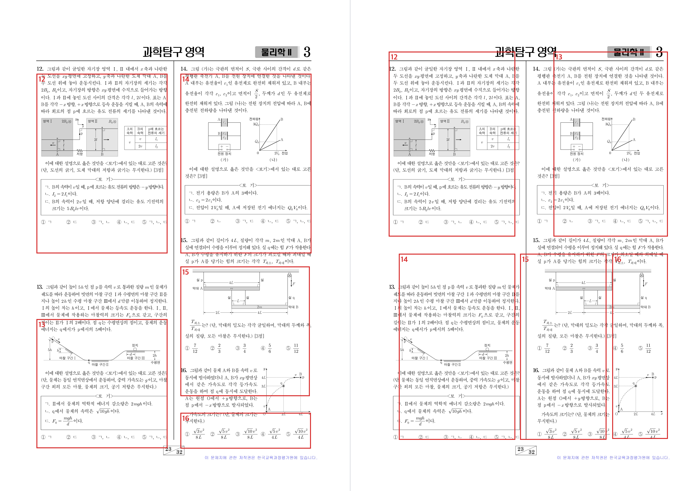
두 모델 모두 문항 번호와 내용은 정확히 읽지만, 문항이 인쇄된 위치는 반환하지 못하거나 실제 영역과 크게 어긋난 값을 반환합니다. 좌표가 없으면 시험지에서 문항 단위 이미지를 잘라낼 수 없습니다.
실험 ② 텍스트 저장 — 글자를 바꿔 쓴다
국어 시험지에서 고전 시가 지문 (가)~(다)가 실린 페이지를 주고, 지문을 인쇄된 그대로 옮겨 적게 했습니다. 데이터베이스에 원문 텍스트를 저장하는 작업 그대로입니다. 채점은 공백과 문장 부호 차이를 무시하고 글자 단위로 원문과 대조했으며, 대조 기준 원문은 시험지 PDF에 기록된 글자를 그대로 사용했습니다.
| 모델 | 글자가 바뀐 회차 | 바뀐 글자 수 (10회 합) |
|---|---|---|
| GPT-5.6 Sol | 10회 중 10회 | 36곳 |
| Gemini 3.1 Pro | 10회 중 2회 | 2곳 |
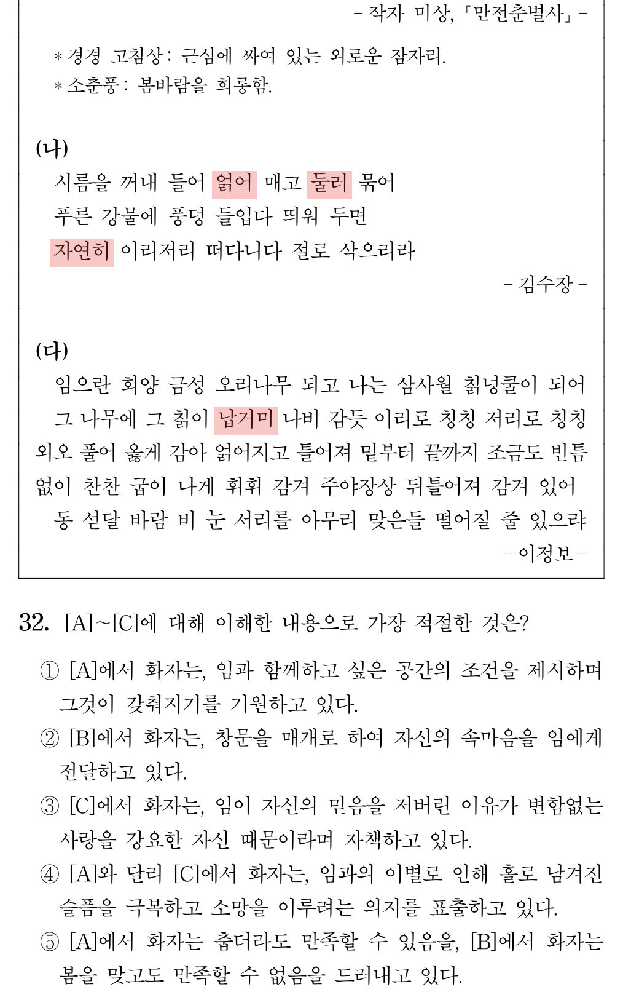
시름을 꺼내 들어 얽어 매고 둘러 묶어 … 자연히 이리저리 떠다니다 절로 삭으리라
그 나무에 그 칡이 납거미 나비 감듯
시름을 꺼내 들어 얹어 매고 돌려 묶어 … 저어히 이리저리 떠다니다 절로 삭으리라
그 나무에 그 칡이 넘거미 나비 감듯
* 10회 중 저어히 9회, 넘거미 9회(낭거미·넙거미·늙거미 각 1회 포함), 돌려 묶어 6회, 얹어 매고 5회.
치환된 단어가 모두 사전에 있는 단어여서 문장이 자연스럽게 읽힙니다. 고전 시가처럼 낯선 표기일수록 모델에게 익숙한 단어로 바뀌는 경향이 뚜렷했습니다.
실험 ③ 형식 구조 — 밑줄과 기호를 오독한다
밑줄·범위 표시·표처럼 문항의 형식을 확인하는 질문 10종을 만들어 각 10회씩 물었습니다. "㉢ 표시와 함께 밑줄이 쳐진 부분을 그대로 인용하라", "표에서 해역 C 행의 속도 칸에 인쇄된 기호를 답하라" 같은, 해설·검토 원고를 쓸 때 실제로 확인하는 사항들입니다.
| 모델 | 정답률 (10종 × 10회) | 오답 내역 |
|---|---|---|
| GPT-5.6 Sol | 76/100 | 다른 밑줄의 구절을 인용 17회, 표 기호 ㉡을 ㄴ으로 답함 7회 |
| Gemini 3.1 Pro | 99/100 | 밑줄 구절 인용 중 '팡'을 '꽝'으로 잘못 읽음 1회 |
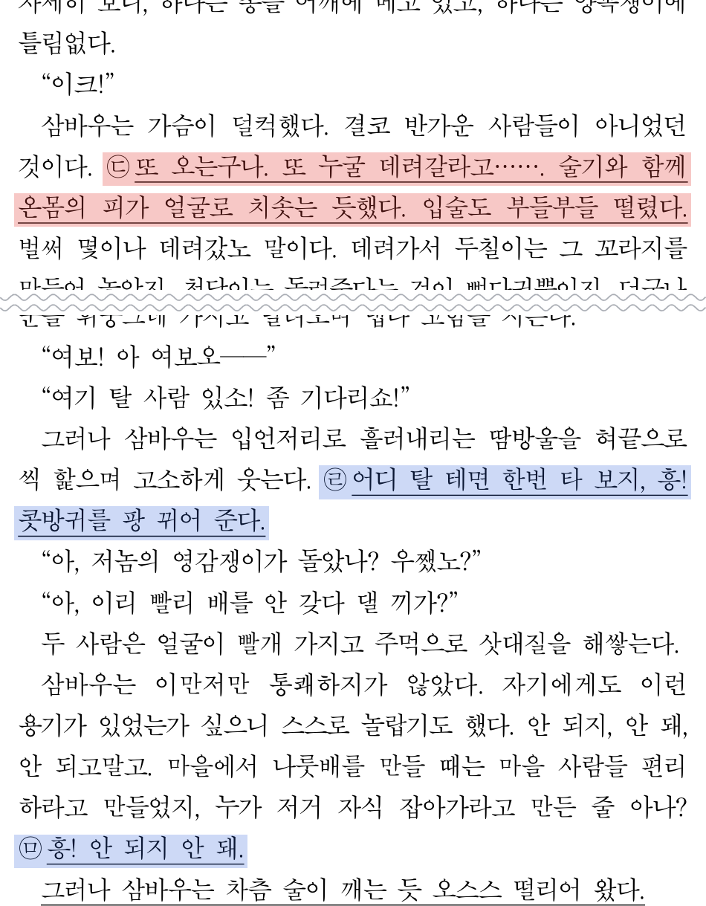
또 오는구나. 또 누굴 데려갈라고……. 술기와 함께 온몸의 피가 얼굴로 치솟는 듯했다. 입술도 부들부들 떨렸다.
10회 중 8회어디 탈 테면 한번 타 보지, 흥! 콧방귀를 팡 뀌어 준다.
인용된 문장은 바로 다음 밑줄인 ㉣의 구절(파란 구간)입니다. ㉣을 물으면 10회 중 9회 그다음 밑줄인 ㉤의 구절("흥! 안 되지 안 돼.")을 인용합니다. 어느 라벨을 물어도 인용이 한 칸씩 어긋납니다.
밑줄 구간·범위 표시·표 구조를 묻는 질문 7종을 추가로 각 10회씩 물었습니다. ㉠ 밑줄 구간의 시작과 끝 어절을 묻는 질문에서 GPT-5.6 Sol은 시작은 10회 모두 맞히고, 끝은 10회 모두 틀렸습니다. [B] 구간의 첫 행을 인용하게 한 질문에서는 실험 ②의 글자 치환도 다시 나타났습니다(경경 고침상 → 겅겅·텅텅 고침상, 10회 중 3회).
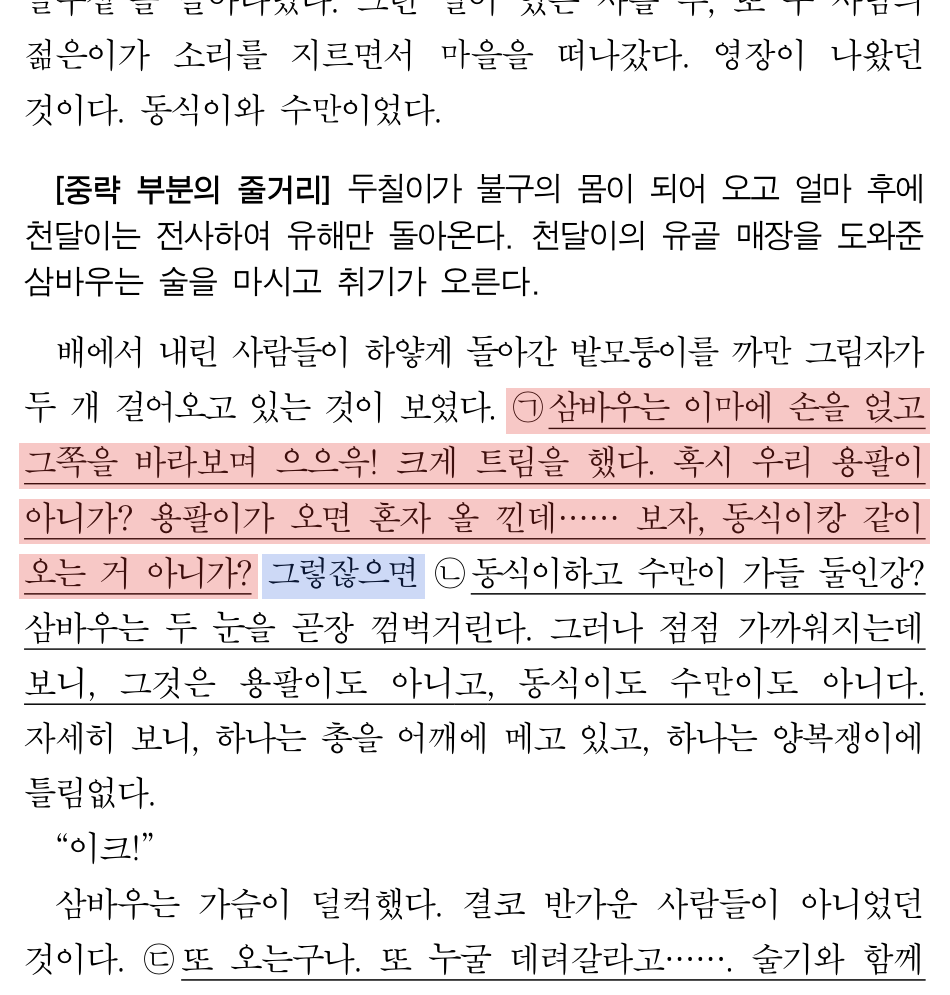
시작 : 삼바우는, 끝 : 아니가?
10회 중 7회그렇잖으면 (파란 표시 — 밑줄이 없는 어절)
10회 중 2회가까워지는데 (다음 밑줄 ㉡ 구간 안의 어절)
10회 중 1회둘인강? (다음 밑줄 ㉡ 구간 안의 어절)
밑줄이 인쇄된 범위가 아니라 주변 문장 구조로 구간을 추정합니다. 10회 중 7회는 다음 라벨 ㉡ 바로 앞 어절인 '그렇잖으면'까지를 구간으로 답했는데, 이 어절에는 밑줄이 없습니다.
세 실험에서 관찰된 오류는 성격이 같습니다. 확률적으로 발생하고, 출력이 그럴듯해서 원본 없이는 가려내기 어려우며, 모델이 이미지를 읽고 내용을 새로 써 내는 방식인 한 완전히 사라지지 않습니다. 그래서 모델의 읽기를 사후에 검증하는 접근 대신, 시험지를 처음부터 정확한 문항 데이터로 변환하는 자체 문항 인식 시스템을 만들기로 했습니다.
2. Pipeline API
Pipeline API는 시험지 파일을 통째로 입력받아 문항 단위의 Question 객체(JSON)로 반환하는 문항 추출 시스템입니다. HWP·HWPX·PDF를 모두 지원하며, 문항 텍스트와 수식·표·밑줄 같은 형식 구조, 문항 영역을 잘라낸 이미지까지 함께 반환합니다. 아래는 실제 시험지를 처리한 결과입니다.
실제 수능 시험지를 Pipeline API로 처리한 검출 화면과 Question JSON · 과목과 화면을 탭으로 전환할 수 있습니다
내부 처리는 세 단계입니다. 수능 지면으로 학습한 검출 모델이 지시문·지문·문항 영역과 그 안의 세부 요소를 찾고, 지면에 기록된 글자와 선을 각 영역에 배정한 뒤, 읽기 순서대로 조립해 Question 객체를 만듭니다.

1) 문항의 위치를 정확하게 인식합니다.
실험 ①에서 두 모델이 반환하지 못한 문항 좌표를, Pipeline에서는 전용 검출 모델이 계산합니다. 지시문·지문·문항의 큰 영역을 찾는 모델과 그 안의 수식·보기 상자·범위 표시·표·그림·문항 번호를 찾는 모델이 단계적으로 지면을 읽습니다. 2027학년도 6월 모의평가 3개 과목 32페이지를 입력하면 Question 95개가 반환되고, 국어 45문항은 지문을 공유하는 문항 묶음(QuestionSet) 11개와 단독 문항 3개로 분리되어 어느 문항들이 지문을 공유하는지가 데이터에 남습니다.
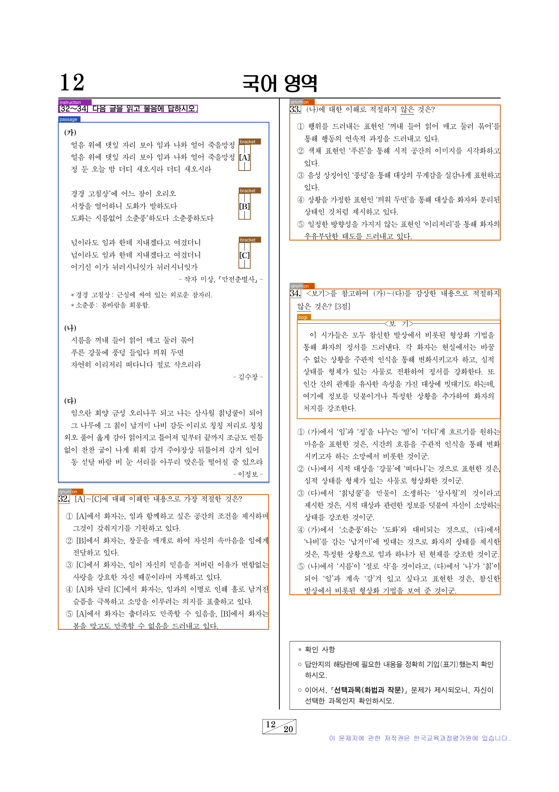
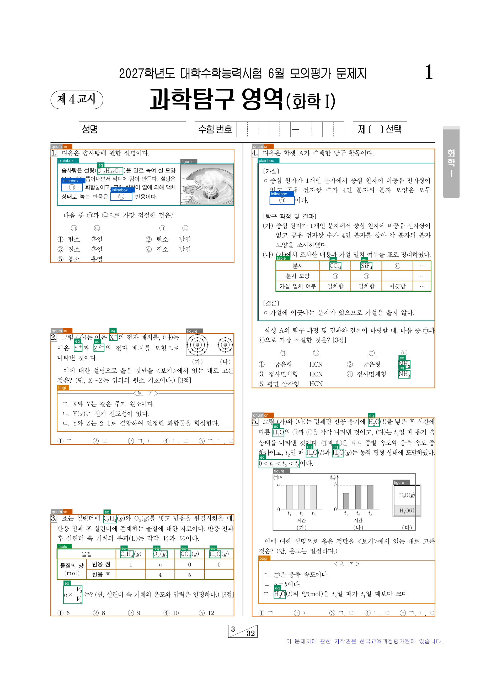
문항 분리가 좌표 기반이므로, 문항마다 원본 지면에서 잘라낸 이미지가 함께 반환됩니다. 문항 이미지는 검수 화면과 교재 조판에 그대로 쓰일 수 있습니다.
2) 내용을 옮겨 쓰지 않고, 지면의 기록에서 복사합니다.
PDF 지면에는 어떤 글자가 어느 위치에 어떤 크기로 찍혔는지가 기록으로 남아 있습니다. Pipeline은 문항의 텍스트를 이미지에서 읽어 내지 않고 이 기록에서 복사합니다. 출력에는 애초에 새 글자가 존재하지 않으므로, 실험 ②에서 관찰된 치환이 발생하지 않습니다.
시름을 꺼내 들어 얽어 매고 둘러 묶어 … 자연히 이리저리 떠다니다 절로 삭으리라
그 나무에 그 칡이 납거미 나비 감듯
실험 ②에서 치환되던 네 단어(파란색)가 원본 그대로 담깁니다. 글자가 지면 기록의 복사이므로 같은 입력에서는 항상 같은 출력이 나옵니다.
수식도 같은 원리로 처리합니다. 수식을 이루는 문자 조각을 지면 기록에서 추출하고, 자체 개발 ML 모델 EqASM이 조각의 배치 구조만 생성해 LaTeX로 조립합니다. 수식 인식의 문제 상황과 EqASM의 설계는 EqASM 포스트에 있습니다.
3) 문항 내부의 특수 디테일들을 보존합니다.
수능 문항에는 일반 문서에 없는 형식 요소가 있습니다. ㄱ·ㄴ·ㄷ 진술이 담기는 보기 상자, 병합 셀이 있는 표, 지문의 [A]~[C] 범위 표시, ㉠~㉤ 밑줄, 발문 속 강조 상자 — Pipeline은 이 요소들을 Question 객체의 명시적인 구조로 저장합니다. 이 요소들이 실제로 어떻게 담기는지, 이 글에서 다룬 문항들의 지면과 출력을 나란히 두면 다음과 같습니다.
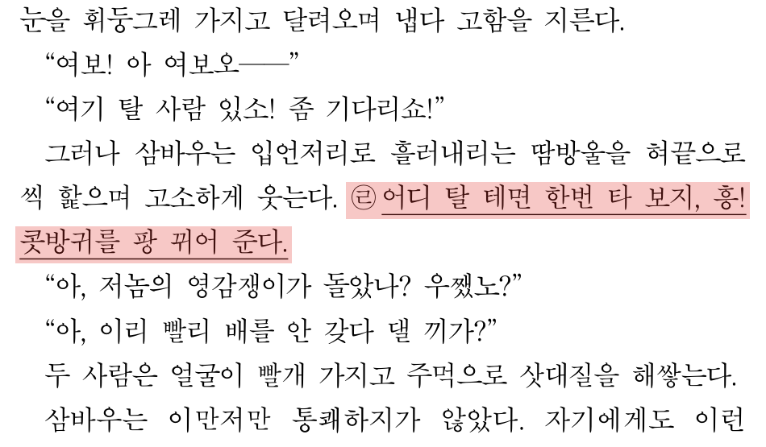
{"type": "Text",
"text": "씩 핥으며 고소하게 웃는다. ㉣ <u>어디 탈 테면 한번 타 보지, 흥! 콧방귀를 팡 뀌어 준다.</u>",
"font": 1, "size": 11.0, "align": "justify"}사례 2에서 인용이 어긋나던 밑줄입니다. 라벨 ㉣과 밑줄 구간이 본문 텍스트 안에 태그로 함께 담깁니다.
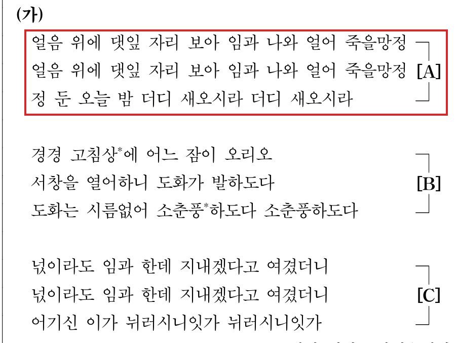
{"type": "Text",
"text": "<bracket:A>얼음 위에 댓잎 자리 보아 임과 나와 얼어 죽을망정 얼음 위에 댓잎 자리 보아 임과 나와 얼어 죽을망정 정 둔 오늘 밤 더디 새오시라 더디 새오시라</bracket:A>",
"font": 1, "size": 11.0, "align": "justify"}사례 1 지문의 [A] 구간입니다. 구간의 시작과 끝이 태그로 담깁니다.
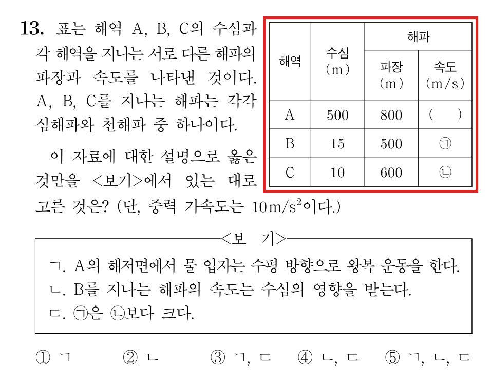
{"type": "Table", "rows": 5, "cols": 4,
"grid": [[0, 1, 2, 2],
[0, 1, 3, 4],
[5, 6, 7, 8],
[9, 10, 11, 12],
[13, 14, 15, 16]],
"cells": [
{"id": 0, "content": [
{"type": "Text", "text": "해역"}]},
{"id": 2, "content": [
{"type": "Text", "text": "해파"}]},
...
{"id": 16, "content": [
{"type": "Text", "text": "㉡"}]}
]}grid의 같은 번호가 하나의 셀입니다. '해역'(0번)과 '수심'(1번)은 두 행에 걸쳐 세로로, '해파'(2번)는 두 열에 걸쳐 가로로 병합되어 있고, 실험 ③에서 묻던 속도 칸의 ㉡은 16번 셀의 값입니다.
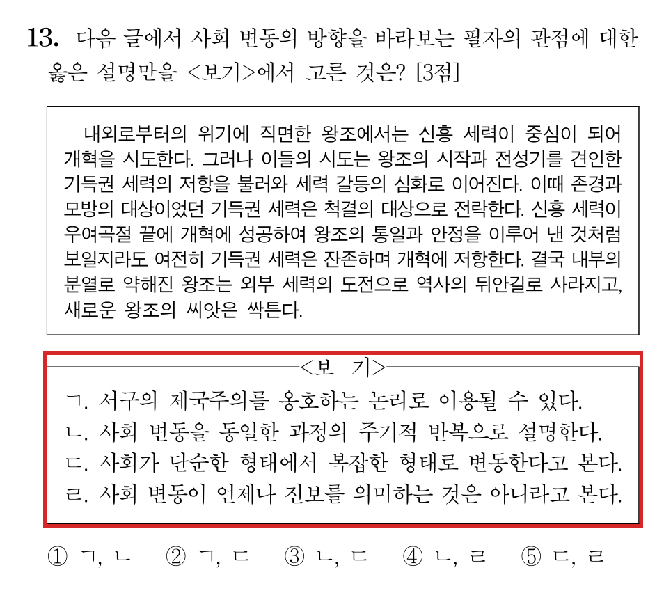
{"type": "BogiBox", "content": [
{"type": "Text", "text": "ㄱ. 서구의 제국주의를 옹호하는 논리로 이용될 수 있다."},
{"type": "Text", "text": "ㄴ. 사회 변동을 동일한 과정의 주기적 반복으로 설명한다."},
{"type": "Text", "text": "ㄷ. 사회가 단순한 형태에서 복잡한 형태로 변동한다고 본다."},
{"type": "Text", "text": "ㄹ. 사회 변동이 언제나 진보를 의미하는 것은 아니라고 본다."}]}보기 상자는 ㄱ~ㄹ 진술이 담긴 별도 구조가 됩니다.
32페이지 처리분에 담긴 형식 요소는 다음과 같습니다.
| 수식 | 보기 상자 | 그림 | 제시문 상자 | 표 | 밑줄 | 굵은 글씨 | 문장 속 상자 |
|---|---|---|---|---|---|---|---|
| 53 | 24 | 19 | 14 | 13 | 89 | 114 | 6 |
실험 ③의 형식 질문 10종을, 이미지 대신 같은 문항의 Question 객체를 입력으로 GPT-5.6 Sol에 다시 물었습니다.
| 입력 | 정답률 (10종 × 10회) |
|---|---|
| 시험지 이미지 (실험 ③) | 76/100 |
| Question 객체 (JSON) | 100/100 |
밑줄은 라벨이 붙은 구간으로, 표는 병합 정보가 있는 격자로 담겨 있으므로, 모델이 이미지를 읽는 대신 데이터를 조회해 답하게 됩니다. 실험 ③에서 관찰된 밑줄 인용 오류와 표 기호 오류는 이 입력에서 발생하지 않았습니다.
4) 한글 프로그램 없이도, HWP를 읽고 쓸 수 있습니다.
문항 자산의 원본은 대부분 한글 문서이고, HWP는 전용 프로그램으로만 열리는 형식입니다. Pipeline에 들어 있는 자체 개발 한글 문서 엔진은 HWP·HWPX 파일을 한컴 프로그램 없이 직접 해석해 문단·표·수식·그림을 하나의 문서 모델로 읽고, 서체별 글자 폭 기준으로 줄나눔과 페이지 흐름을 계산해 글자 기록이 보존된 PDF 지면으로 조판합니다. 그래서 HWP·HWPX·PDF 어느 입력이든 같은 추출 경로 하나로 처리됩니다.
반대 방향도 지원합니다. Question 객체에서 새 HWPX 문서를 조판하는 쓰기 경로가 있어, 추출한 문항이나 LLM이 생성한 문항을 한글 문서로 만들 수 있습니다.
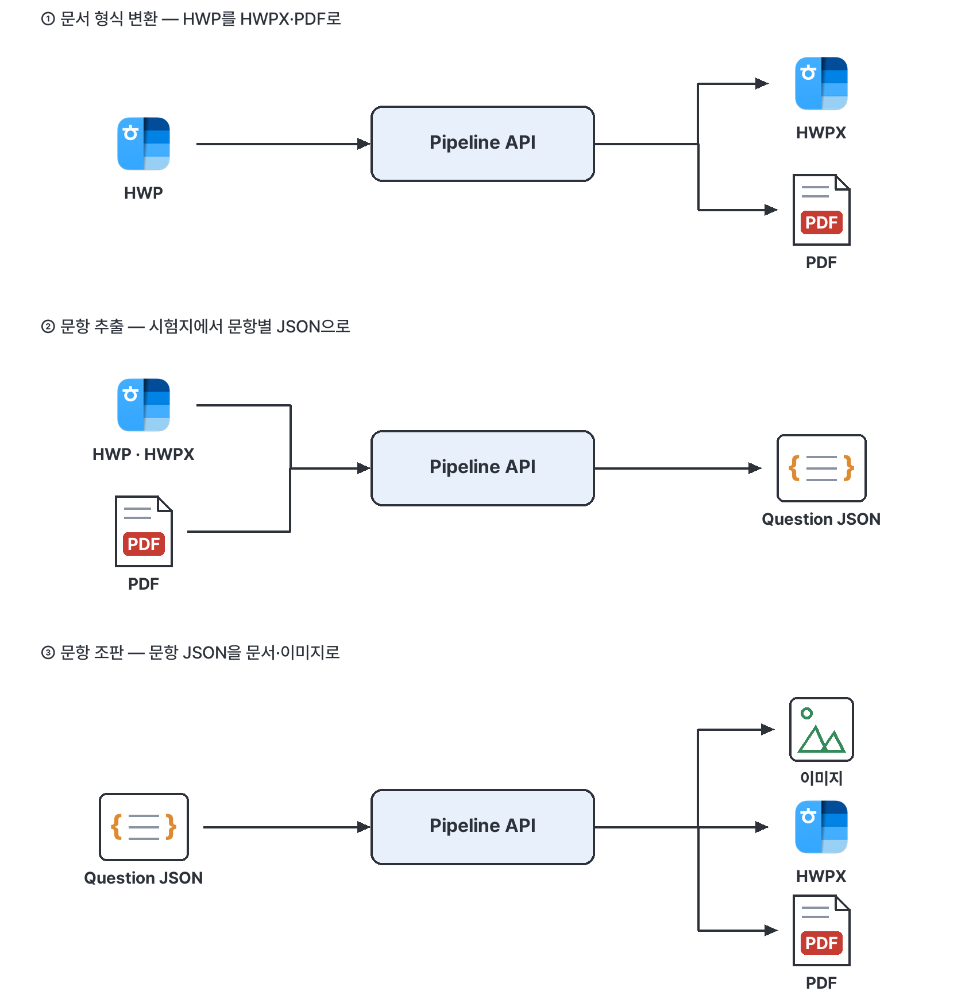
3. 활용 방안 및 결론
Pipeline API는 글자를 인쇄 기록에서 복사하고 문항의 위치와 형식 구조를 전용 검출 모델로 읽기 때문에, 1장에서 관찰된 오류 없이 시험지 파일을 문항 단위 데이터로 변환할 수 있습니다. 변환된 Question 객체에는 원문 그대로의 텍스트와 형식 구조, 문항 이미지가 함께 담깁니다.
이렇게 만들어진 데이터는 다음과 같은 곳에 쓰일 수 있습니다.
| 활용 | 방식 |
|---|---|
| 문항 은행 구축 | 시험지 아카이브를 문항 단위 Question 객체로 일괄 변환해 검색·분류 가능한 데이터베이스로 저장 |
| 문항 검색 · 유사 문항 추천 | 원문 텍스트와 수식·형식 구조를 색인해 조건 검색과 유사도 비교의 입력으로 사용 |
| 난이도 예측 | 문항 본문·수식·그림을 예측 모델의 입력으로 사용 |
| 출제 · 검토 보조 | LLM이 Question 객체를 읽어 문항을 검토·생성하고, 결과를 HWPX로 조판해 실무 문서로 전달 |
| 교재 · 시험지 제작 | 문항 JSON을 이미지·PDF·HWPX로 조판해 편집 자산으로 사용 |
Pipeline API는 kdsnr-ai Python 라이브러리로 제공되며, 전체 사용법은 Pipeline 문서에 있습니다.